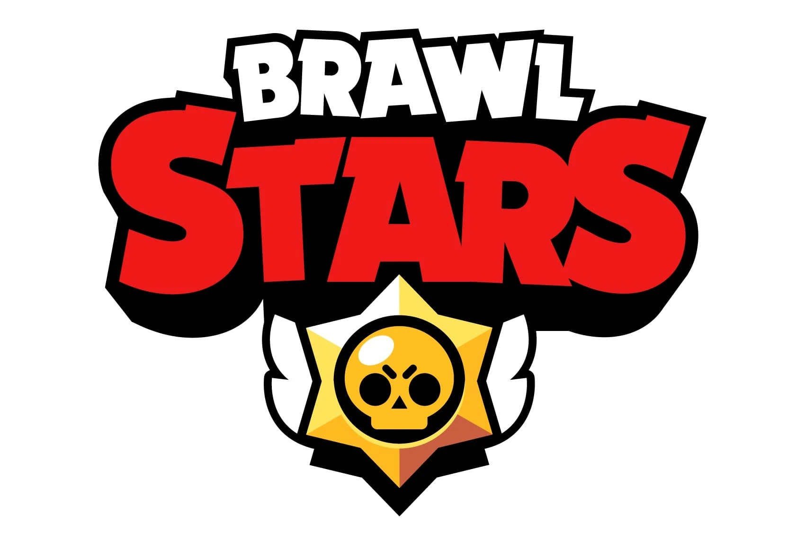

¿Que es Brawl Stars?
Brawl Stars es un videojuego multijugador para móviles disponible en Android y iOS, desarrollado por Supercell y lanzado globalmente en 2018.
El objetivo principal del juego es conseguir la mayor cantidad de trofeos y brawlers (los personajes de Brawl Stars), para progresar en un camino de trofeos. Los jugadores entran a diferentes modos de juego, con diferentes brawlers, cada uno con habilidades únicas, que luchan en diferentes modos de juego para subirlos de rango, de trofeos y de maestría. También los jugadores pueden unirse a clubes con sus compañeros o amigos y hacer partidas amistosas, jugar en diferentes modos de juego en competitivo o en solitario, o incluso crear sus propios mapas de juego.
